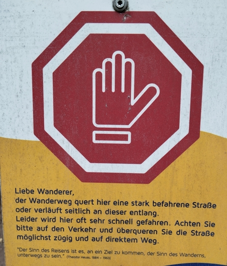

Achtung! Liebe Wanderer
assistant
- Source
- Schild der Tourist-Information an einem Wanderweg
- Place
- Other
- Situation
- Wanderung
- Topic
- Wandern Verkehrszeichen

Transcription
Achtung!
Liebe Wanderer, der Wanderweg quert hier eine stark befahrene Straße oder verläuft seitlich an dieser entlang.
Leider wird hier oft sehr schnell gefahren.
Achten Sie bitte auf den Verkehr und überqueren Sie die Straße möglichst zügig und auf direktem Weg.
"Der Sinn des Reisens ist es, an ein Ziel zu kommen, der Sinn des Wanderns, unterwegs zu sein." (Theodor Heuss)
Deutsch-Luxemburgische Tourist-Information, Tel. [Telefon], [Website]
Meaning
Attention! Dear hikers, here the trail crosses a busy road or runs along its side. Sadly, people often drive very fast here. Please watch the traffic and cross the road as quickly as possible and straight across. The quote by Theodor Heuss, the first Federal President: the point of travelling is to arrive somewhere, the point of hiking is to be on the way.
wird ... gefahren is a passive without a subject: it says that driving happens, not who drives.